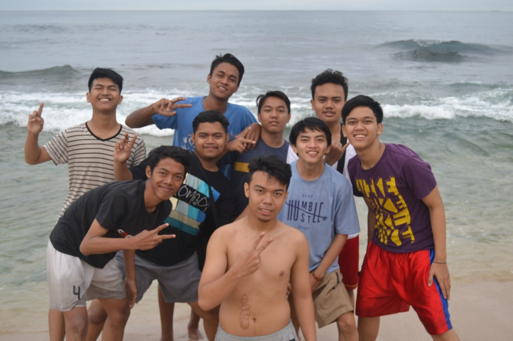
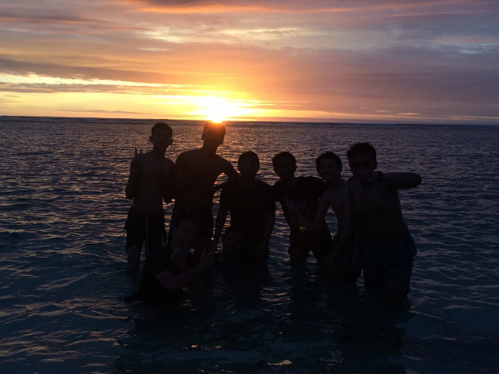
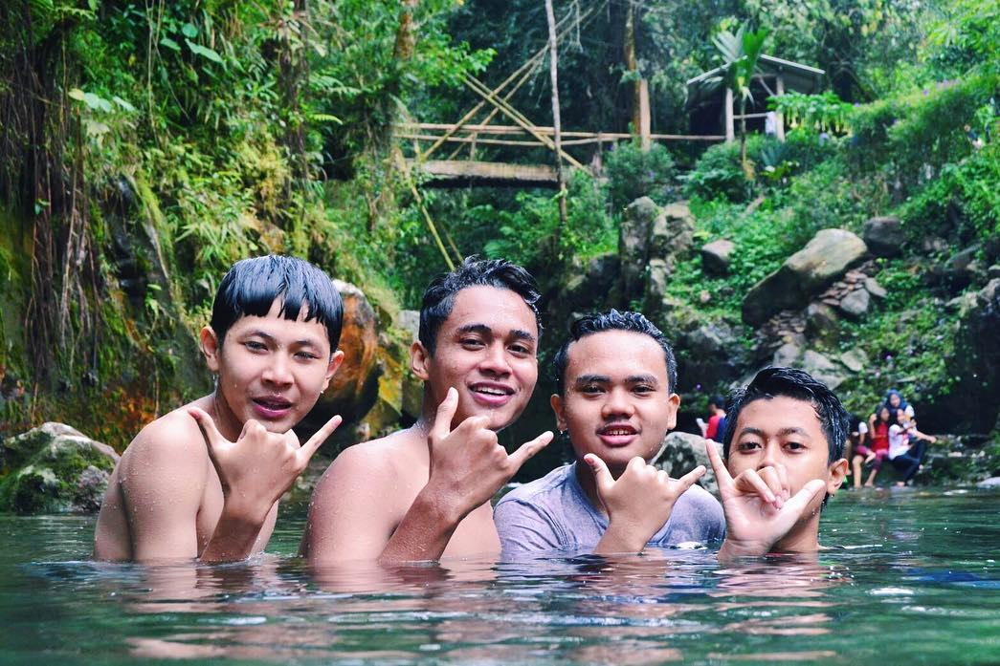
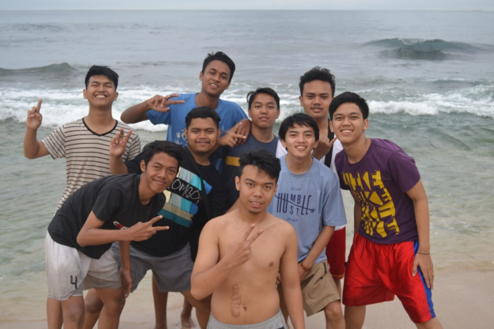
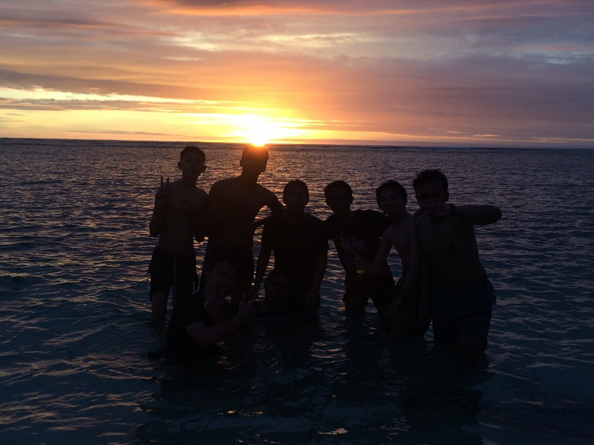
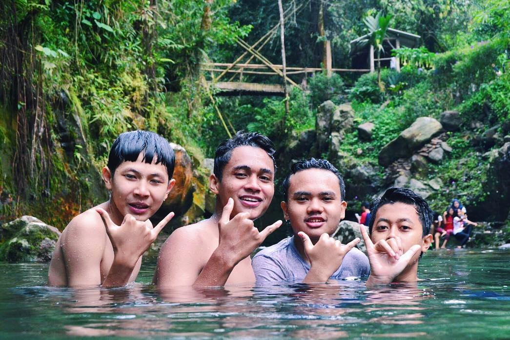
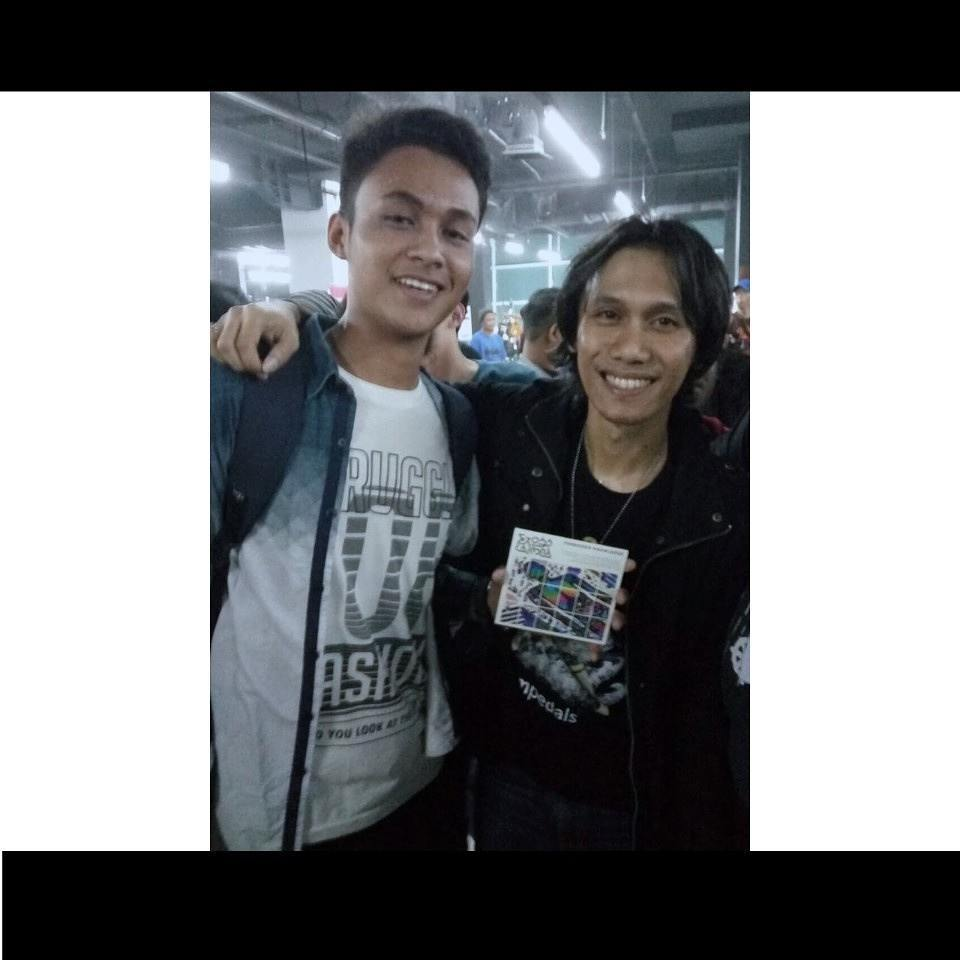
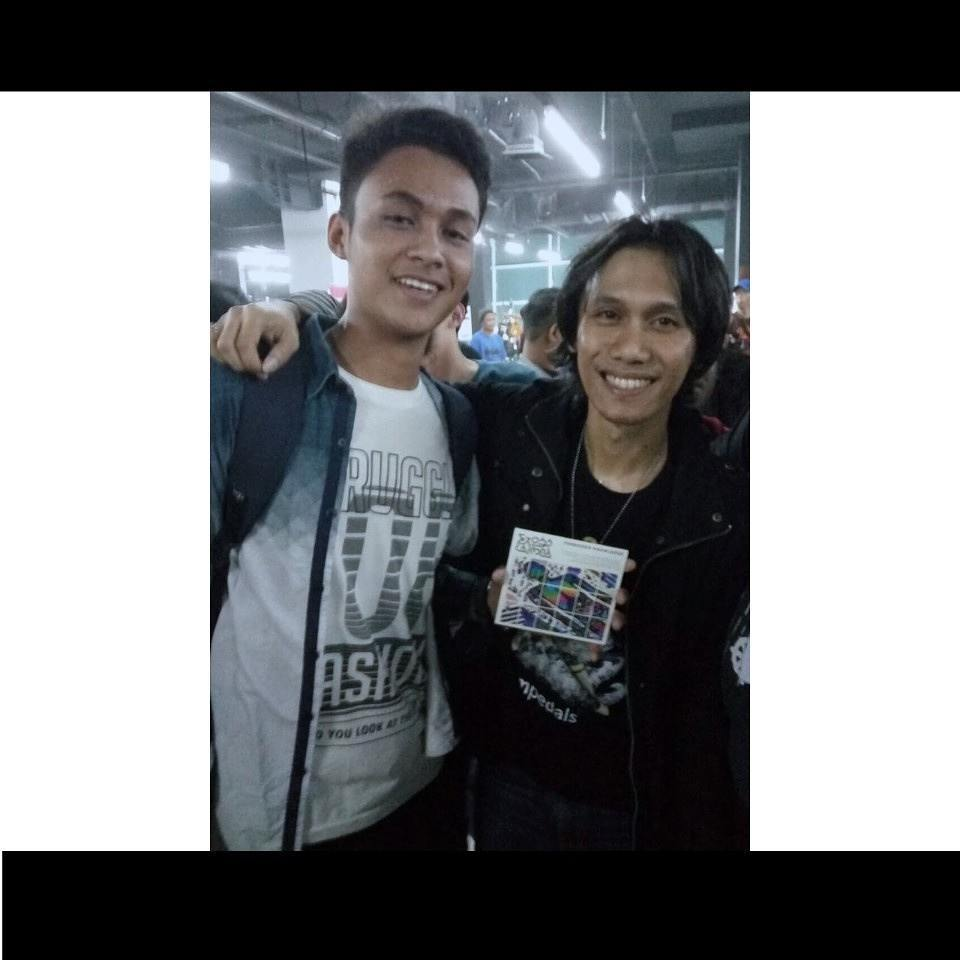
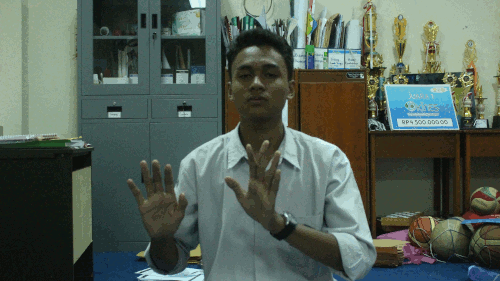

Wilujeung Sumping :)
Yuks liat profilku....
Nama saya Rafi Fahriansyah, biasa dipanggil Apong, entah apa hubungan antara nama panggilanku dengan nama asliku. Saya sekolah di SMK-SMAK Bogor, masuk pada tahun 2017 dan tegabung di angkatan 63 yang bernama PRAGNACIO NEUTRINA
. Di Sekolah, saya mengikuti beberapa organisasi atau eskul, seperi : PP, Band, Voli,dan Futsal
Foto bersama teman Persatuan Pelajar

Foto Band PORSIP 2K17 II

Foto Voli PORSIP 2K17 II

Foto Futsal PORSIP 2K17 II

Tentang Hobi Saya
Hobi saya salah satunya adalah bermain game, dan sekarang ini, perkembangan game di Indonesia sudah sangat pesat dengan munculnya E-sports, dan saya cukup menggemari game-game sekarang ini, salah satunya adalah Mobile Legends.
Foto Bersama tim E-Sports Indonesia ( EVOS )
 Selain bermain game, hobi saya adalah jalan-jalan atau biasa disebut traveling. Biasanya saya berpergian bersama teman-teman saya di sekolah. Saya biasa berpergian tidak hanya dengan teman satu kelas, namun juga teman satu angkatan bahkan belum terlalu kenal sekalipun, hobi kami menyatukannya.



Dan saya juga menyukai fotografi dan sejenisnya. Karena saya sangat menyukai sekali untuk membuat suatu karya yang mengungkapkan ekpspresi saya biasanya, dan juga saya sangat suka mengabadikan momen-momen yang ada, karena sangat berguna kelak untuk mengingat momen-momen baii yang membahagiakan ataupun tidak
Selain bermain game, hobi saya adalah jalan-jalan atau biasa disebut traveling. Biasanya saya berpergian bersama teman-teman saya di sekolah. Saya biasa berpergian tidak hanya dengan teman satu kelas, namun juga teman satu angkatan bahkan belum terlalu kenal sekalipun, hobi kami menyatukannya.



Dan saya juga menyukai fotografi dan sejenisnya. Karena saya sangat menyukai sekali untuk membuat suatu karya yang mengungkapkan ekpspresi saya biasanya, dan juga saya sangat suka mengabadikan momen-momen yang ada, karena sangat berguna kelak untuk mengingat momen-momen baii yang membahagiakan ataupun tidak
Hasil Foto yang saya abadikan

Tentang Idola Saya
Salah satu idola saya adalah Eross Candra. Ia adalah gitaris dari Band Sheila On 7, ia memainkan lagu dengan cukup sederhana namun enak didengar. Ia juga merupakan pencipta dari beberapa lagu Hits di Indonesia pada masanya, seperti : Sephia, Dan, Kisah Klasik, dan banyak lagu Sheila on 7 Lainnya. Saya memiliki impian untuk berkolaborasi dalam satu panggung bersamanya. Dan juga bermain gitar ini merupakan hobi saya juga, mengapa saya menyukainya? Karena menurut saya, bermain musik khususnya gitar ini, dapat mengeluarkan ekspresi/emosi saya yang sebenarnya, yang tumbuh dari dalam hati. Dan juga ada sebuah quotes,Where Words Fail, Music Speaks
. Maka itu saya merasa saat kata-kata sudah tak bisa mengungkapkan perasaan saya, maka musiklah yang akan mengungkapkan bagaiamana perasaan yang ada dalam hati saya.
Foto Bersama Idola Saya (Eross Candra)
 

Sepertinya hanya itu saja yang bisa saya berikan saat ini, sampai jumpa dilain kesempatan:)

eh ada yang ketinggalan, kasih quotes dlu.
Jalani, Resapi, dan Cintailah Kehidupan ini. Biarkan semua bekerja sesuai kodratnya.